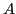

Known as one of the best iterative methods for solving symmetric positive definite linear systems, CG generates as FOM an Hessenberg matrix which is symmetric then triangular.
This specific structure may be really helpful to understand how does behave the convergence of the conjugate gradient method and its study gives an interesting alternative to Chebyshev polynomials. The talk deals about some new bounds on residual norms and error

-norms using essentially the condition number.We will show how to derive a bound of the - norm of the error by solving a constrained optimization problem using Lagrange multipliers.